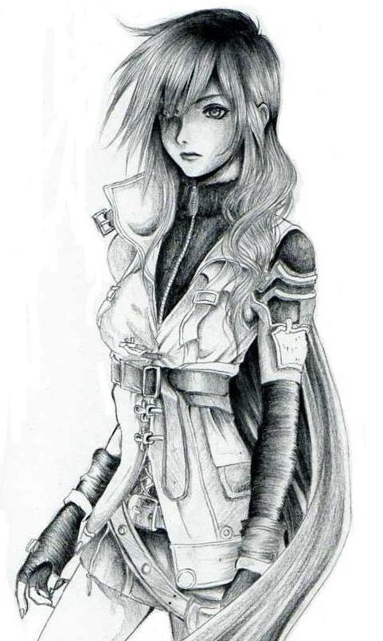
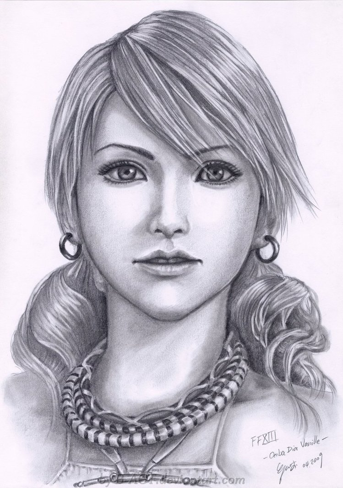

Válogatott karakterképek:
 A Káosz szerepjáték (rövidítve KRPG) könyv és szerepjátékrendszer 2001-ben jelent meg a Cherubion Könyvkiadó gondozásában. A rendszer megalkotói Nemes István, Bihon Tibor és Hüse Lajos. A játék megalkotásában többen is részt vettek. A Káosz szerepjáték alapjai és Worluk, a káosz világa Nemes István Káosz-ciklusában jelentek meg, legelőször a Káosz Szava című regényében.
Nemes István Skandar Graun kalandjait elmesélő művei a hazai fantasy sarokköveinek számítanak, amit remekül mutat, hogy mind a mai napig sokan olvassák Yvorl harcos-papjának kalandjait. Worluk morálisan szürke világán nem véletlen, hogy nem a jó és a rossz, hanem a rend és a káosz erői harcolnak egymással, hiszen mindkét oldal bőségesen alkalmaz piszkos trükköket és a részletesen kidolgozott, izgalmas és érdekes planétán garantáltan mindenki talál magának egy kedvére való országot, ahol megkezdheti a kalandozói pályafutását. A játék fő erénye a szabályrendszer, különösen a karakteralkotás komplexitása, ami garantálja, hogy bármilyen, a könyvekben felbukkanókra hajazó, extrém vagy szórakoztató figurát össze tudunk hozni. Egy fafaragómesterrel játszanánk, aki bár nem ért a harchoz, ha felbosszantják, berzerkerként üt-ver mindenkit, aki a szeme elé kerül? Netán egy manó tolvajjal, aki titokban iszonytató mágusfejedelemnek tartja magát, mert egy kupa serért el tudott sajátítani egy gombakereső, vagy eső ellen védő varázsmondókát egy félbolond vajákostól? Vagy egy két fejjel és egyben két, gyökeresen eltérő személyiséggel bíró ogár, egy a mágia alapszabályait sem ismerő, de pusztító erőknek parancsoló vadmágus, esetleg egy súlyosan beszédhibás, magát tánc és illemtanárnak álcázó orgyilkoshoz lenne kedvünk, aki mellékesen selypegése ellenére a nők kedvence és már-már gyanúsan gyakran van szerencséje? Mindegyik megoldható, hiszen nincs kötött kasztrendszer, ellenben rengeteg fajból, előnyből, hátrányból és képzettségből mazsolázhatunk, és csak rajtunk múlik, hogy mit is hozunk ki belőlük. Ez persze elsőre némileg elrettentő lehet a hobbival még csak ismerkedők számára, de mivel a szabálykönyv ingyenesen letölthető, bárki elolvashatja azt.
Bárkinek, aki nyitott egy érdekes és hangulatos világra, illetve szereti, ha nem korlátozzák kasztok közé azt, hogy mit tehet és mit nem, de nem fél egy kis számolástól és táblázat-bogarászástól.
Források: